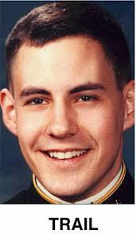

Minneapolis

It was here where Andrew Cunanan began his killing spree. He flew out from Los
Angeles to visit his friends Jeffrey Trail and David Madson. At David Madson’s
apartment on April 27th, 1997, Cunanan murdered Trail out of jealousy. Investigators
believe Cunanan did not like how close Trail was to Madson. Madson
and Cunanan were seen walking around the apartment building and Minneapolis.
Cunanan called Madson the love of his life and told others he wanted to marry him.
Trail was probably seen as a threat to Cunanan's relationship with Madson and he wanted to eliminate him.